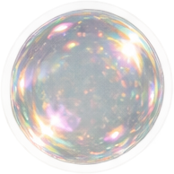
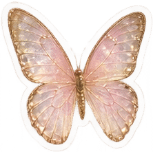

شعرك روتين الشعر والرزنامة — افتحي
مِران تمارين الذهن اليومية — افتحي
قريبًا
دفتر ياسمين وألداكتون
بانتظار قرارك عشان أبنيه.
—

شعرك روتين الشعر والرزنامة — افتحي
مِران تمارين الذهن اليومية — افتحي